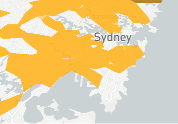
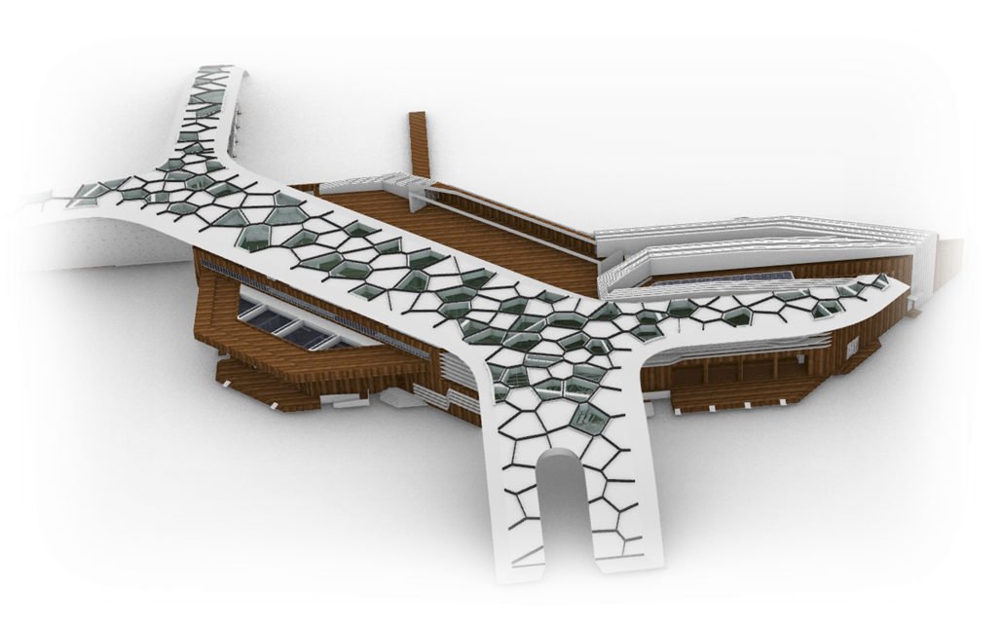
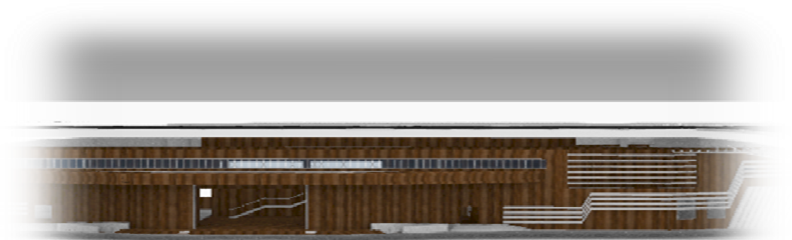

Sydney's workforce based on gender and age does a good job, but there is still a gap in the eastern suburb area, which seems to me to be because the lack of transportation in this area leads to uneven labor distribution according to gender and age. The place is far from the city centre of Sydney and lacks some convenient means of transportation, such as train stations and bus terminals. And there are 31,488 companies in this area. Although this number is not very large, because of the regional problems, many people in the city center have to pay a lot of money to go to work here, so this place is not the preferred target for everyone's work. This situation has led to an uneven distribution of labor to a certain extent.
This is my design, this is a passenger station
The first floor is a bus terminal with lots of buses for short trips, making the internal suburb area more convenient. For traffic problems in relatively remote areas, I chose to add a subway to the ground. Stand to solve this problem

Design Concept: According to the analysis of male and female labor distribution analysis, we conclude that whether it is labor distribution or social resource allocation, a transition point is needed to integrate and redistribute resources. Therefore, this public transportation hub was designed to achieve the goal of resource integration through bus collection and distribution. In the design, the roof structure of four directions is used to express the divergence of the bus system. Under the roof is a station space formed by a combination of several functions and fast cutting, providing a resting place for passengers and providing bus drivers. A space for rest and entertainment. In the building, a large number of standardized components are used, and then the data processing of the grassshop is used to form the skin of the building, which finally forms a modern public building that meets the needs of the times.
